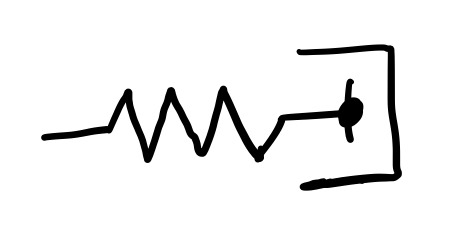

7.4. Homogeneous linear second-order ODEs with constant coefficients#
Equations of the form:
come up often in chemical engineering, particularly in steady-state heat and mass diffusion, so it is important to know how to solve them!
Guess a solution \(y=e^{\lambda x}\), then substitute into the differential equation:
This characteristic polynomial has two roots \(\lambda_1\) and \(\lambda_2\), and the general solution for y is obtained by superposition of both.
We will consider an example of each case next.
7.4.1. Real distinct roots#
To solve
First write and solve the characteristic polynomial,
so \(\lambda_1 = -2\) and \(\lambda_2 =1\). The general solution and its first derivative are:
So applying the initial conditions:
These coefficients can be solved by Gauss-Jordan elimination:
so \(c_1 = 3\) and \(c_2 = 1\). The final solution is:
7.4.2. Complex roots#
To solve:
Write and solve the characteristic polynomial,
Once values of \(\lambda\) are known, write out the general solution and plug in the first initial condition to solve for \(c_1\).
Hence the first term can be dropped from the solution. In order to solve for \(c_2\), write out the derivative and plug in the second condition:
Since \(c_2=1\), the final solution is:
7.4.3. Real repeated roots#
To solve:
Write and solve the characteristic polynomial,
So \(\lambda = -1/2\) is a real and repeated root. Write out the general equation and its derivative,
Use the given conditions to solve for \(c_1\) and \(c_2\):
The final solution is:
7.4.4. Applications#
Example: Spring and dashpot
We are analyzing how the drag force affects the spring oscilations. This is a mechanics example, but models like this are also used for the rheology of viscoelastic materials.
A mass m is attached to a Hookean spring with spring constant k and experiences a drag force as it moves with drag coefficient \(\gamma\).
{kind=link}
If x is the displacement of the spring, the governing equation for x is given by Newton’s equations:
The first term represents the acceleration of the mass, the second term is the drag force, and the third term is the spring force.
For what values of \(\gamma\) will the mass oscillate after it is stretched?
To answer this, first solve the roots of the characteristic polynomial for this second-order ODE:
You will only get oscillations if \(\lambda_{1,2}\) is complex, which only occurs when \(\gamma^2 < 4mk\). In this case:
so the general solution for x is:
where \(\omega = \sqrt{4mk - \gamma^2}\). What does \(\gamma\) do to the solution?
\(\gamma\) dampens the oscillations to decay to zero. The decay time \(2m/\gamma\) increases as \(\gamma\) decreases, and without it, oscillations go on forever.
\(\gamma\) also changes the frequency of the oscillations through \(\omega\).
Second-order ODEs also come up frequently in steady-state transport problems involving diffusion.
Example: Steady-state reaction-diffusion
A first-order reaction is occuring in a liquid film of thickness L. The reactant concentration at \(x = 0\) is fixed to the bulk value \(c_0\), while a solid substrate at \(x=L\) prevents any mass flux.
{kind=link}
At steady-state, the reactant concentration c can be modeled by:
where D is the reactant’s diffusion coefficient and k is the reaction rate constant. Determine \(c(x)\).
First, rewrite in standard form:
The characteristic polynomial is
The general solution and its first derivative are:
Evaluating the boundary conditions:
This is a linear system of equations. Solving for \(a_1\) and \(a_2\) simultaneously gives
Thus,
7.4.5. Skill builder problems#
Solve the following:
\(y'' - 2y' - 3y = 0\), \(y(0) = 2\), \(y'(0) = 14\)
Solution
Write and solve the characteristic polynomial:
(7.67)#\[\begin{align} \lambda^2 - 2\lambda - 3 &= 0 \\ (\lambda - 3)(\lambda + 1) &= 0 \end{align}\]so \(\lambda_1 = 3\) and \(\lambda_2 = -1\). The general solution and its first derivative are:
(7.68)#\[\begin{align} y &= c_1 e^{3t} + c_2 e^{-t} \\ y' &= 3c_1 e^{3t} - c_2 e^{-t} \end{align}\]Apply the initial conditions:
(7.69)#\[\begin{align} y(0) &= c_1 + c_2 = 2\\ y'(0) &= 3c_1 - c_2 = 14 \end{align}\]and solve the system for \(c_1\) and \(c_2\) using Gauss-Jordan elimination:
(7.70)#\[\begin{align} \begin{bmatrix} 1 & 1 & 2 \\ 3 & -1 & 14 \end{bmatrix} \begin{matrix}\vphantom{R_1} \\ -3 R_1 \end{matrix} &\to \begin{bmatrix} 1 & 1 & 2 \\ 0 & -4 & 8 \end{bmatrix} \begin{matrix}\vphantom{R_1} \\ \div -4 \end{matrix} \\ &\to \begin{bmatrix} 1 & 1 & 2 \\ 0 & 1 & -2 \end{bmatrix} \begin{matrix} -R_2 \\ \vphantom{R_2} \end{matrix} \\ &\to \begin{bmatrix} 1 & 0 & 4 \\ 0 & 1 & -2 \end{bmatrix} \end{align}\]Therefore:
(7.71)#\[\begin{equation} y = 4e^{3t} - 2e^{-t} \end{equation}\]\(y'' + 2y' + y = 0\), \(y(0) = 4\), \(y'(0) = -6\)
Solution
Write and solve the characteristic polynomial:
(7.72)#\[\begin{align} \lambda^2 + 2\lambda + 1 &= 0 \\ (\lambda + 1)^2 &= 0 \end{align}\]so \(\lambda = -1\) (repeated root). The general solution and its first derivative are:
(7.73)#\[\begin{align} y &= (c_1 + c_2 t) e^{-t} \\ y' &= (c_1 + c_2 t)(-e^{-t}) + c_2 e^{-t} \end{align}\]Apply the initial conditions:
(7.74)#\[\begin{align} y(0) &= c_1 = 4\\ y'(0) &= -c_1 + c_2 = -6 \to c_2 = -2 \end{align}\]Therefore:
(7.75)#\[\begin{align} y = (4 - 2t)e^{-t} \end{align}\]\(10y'' - 50y' + 65y = 0\), \(y(0) = \frac{3}{2}\), \(y'(0) = \frac{3}{2}\)
Solution
Write and solve the characteristic polynomial:
(7.76)#\[\begin{align} 10\lambda^2 - 50\lambda + 65 &= 0 \\ \lambda_{1,2} &= \frac{50 \pm \sqrt{50^2 - 4 \cdot 10 \cdot 65}}{20} \\ &= \frac{5 \pm i}{2} \end{align}\]Since we have complex roots, the general solution and its first derivative are:
(7.77)#\[\begin{align} y &= e^{\frac{5t}{2}} \left(c_1 \cos\frac{t}{2} + c_2 \sin\frac{t}{2} \right) \\ y' &= e^{\frac{5t}{2}} \Biggl( -\frac{c_1}{2} \sin\frac{t}{2} + \frac{c_2}{2} \cos\frac{t}{2} \Biggr) + \frac{5}{2}e^{\frac{5t}{2}} \Biggl( c_1 \cos\frac{t}{2} + c_2 \sin\frac{t}{2} \Biggr) \end{align}\]Apply the initial conditions:
(7.78)#\[\begin{align} y(0) &= c_1 = \frac{3}{2} \\ y'(0) &= \frac{c_2}{2} + \frac{5}{2}c_1 = \frac{3}{2} \to c_2 = -\frac{9}{2} \end{align}\]Therefore:
(7.79)#\[\begin{align} y = e^{\frac{5t}{2}} \left( \frac{3}{2} \cos\frac{t}{2} - \frac{9}{2} \sin\frac{t}{2} \right) \end{align}\]\(y'' + \pi y' = 0\), \(y(0) = 3\), \(y'(0) = -\pi\)
Solution
Write and solve the characteristic polynomial:
(7.80)#\[\begin{align} \lambda^2 + \pi\lambda &= 0 \\ \lambda(\lambda + \pi) &= 0 \end{align}\]so \(\lambda_1 = 0\) and \(\lambda_2 = -\pi\). The general solution and its first derivative are:
(7.81)#\[\begin{align} y &= c_1 + c_2 e^{-\pi t} \\ y' &= -c_2 \pi e^{-\pi t} \end{align}\]Apply the initial conditions:
(7.82)#\[\begin{align} y(0) &= c_1 + c_2 = 3 \\ y'(0) &= -c_2 \pi = -\pi \end{align}\]so \(c_1 = 2\) and \(c_2 = 1\). Therefore:
(7.83)#\[\begin{equation} y = 2 + e^{-\pi t} \end{equation}\]